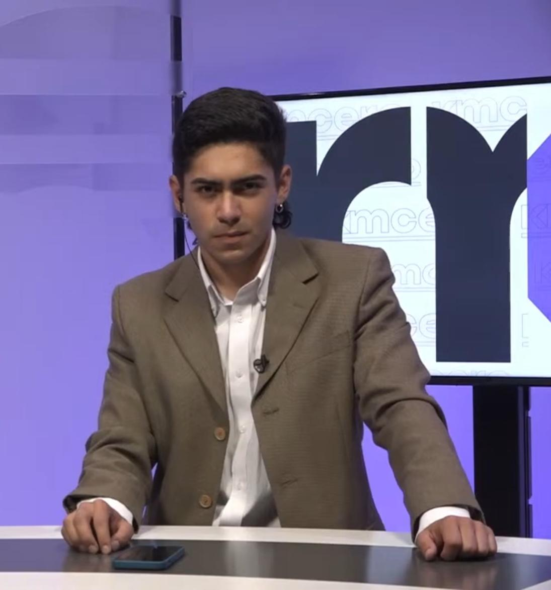

Maximiliano Jaque
21 años

Formación académica
Educación Básica y Media en Colegio de la Salle Talca (2008-2020)
Estudiante de Periodismo en la Pontificia Universidad Católica De Chile (2021 en adelante)
Taller de Liderazgo Asociación Guías y Scouts de Chile (2020)
Información Laboral
Empaque en Supermercado La Buena Carne (2016-2021)
Locutor en Productora EIRL (2023)
Animador Epicentro Fonda Talca (2022)
Actividades Extracurriculares
Scout (desde el año 2016)
Dirigente Scout con certificación de la Asociación Guías y Scouts de Chile (desde 2022)
Habilidades
Creatividad
Carisma
Liderazgo
Instagram personal